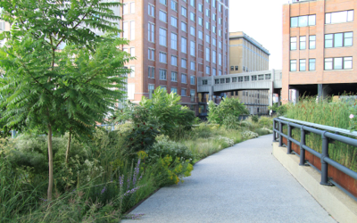

new york and newfoundland
New Yorkers are quite resourceful. One key example is the High Line - an old raised railway line which has been turned into a public park.
Wanting something different the gang decided it was worthwhile exploring a New York destination that didn’t revolve around shopping, eating or drinking - contentious we know!
Wandering through the streets of Chelsea and the Meatpacking District we stumbled upon the High Line. This once abandoned space is now sparse of weeds and rusting steel and is abundant with gardens, benches and interesting viewing points. It’s a work in progress but sometime in the next couple of years it will be close to 20-30 blocks long!
It’s quite an experience walking through gardens above New York City traffic and feels like you’re miles away from the hustle and bustle below!

Monday, 30 August 2010